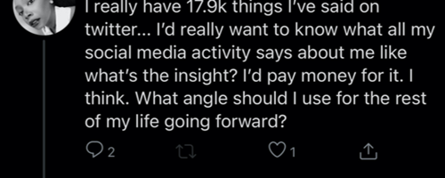

With consumer technology companies it's become increasingly common to see unique features quickly become table stakes: the minimum offering needed to meet customer expectations. The most referenced example of this is probably Stories, which started off on Snapchat and eventually became ubiquitous.
I think usage analytics: showing users an aggregate of their activity on the platforms they engage with will soon be table stakes, and "End of the Year Reviews" are a great use case as folks get more introspective as they wrap up the year.
A good signal of trends is when users perform an action on one platform and share it across others - It means they liked it enough to share wherever they had an existing or larger network. Back in the day before Twitter had native photo sharing it was possible to share & view Instagram photos. My question of how the product team felt about it was quickly answered when Instagram limited this feature, to keep users' photo viewing mainly confined to the platform where they originally posted. Sound business logic, too.
So, when I saw people share their 2020 recaps from Spotify and Apple Music on Twitter and knowing about its robust analytics features from the developer program, I wondered if the product team observed this cross-platform sharing and why they hadn't done a similar thing at the end of the year with their already existing data assets, especially as the Analytics page isn't front and center or visible to the average user.
What would a Twitter yearly round up look like? I conceptualized it as an End of the Year report. While I make time to prototype this, here's my mindmap of how it would work under the hood.
Twitter's Analytics feature already has descriptive stats, so throwing in natural language processing e.g Sentiment Analysis, Semantic Analysis and Bag of Words would be the addition that could yield some interesting results.

My hunch from daily interaction with users, is people could pay for it too.
Category: Product Management